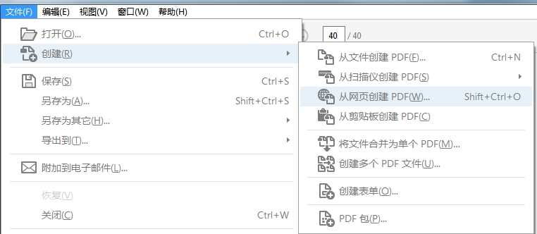
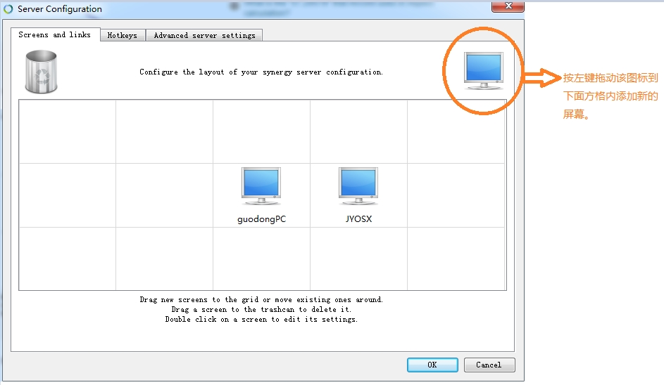
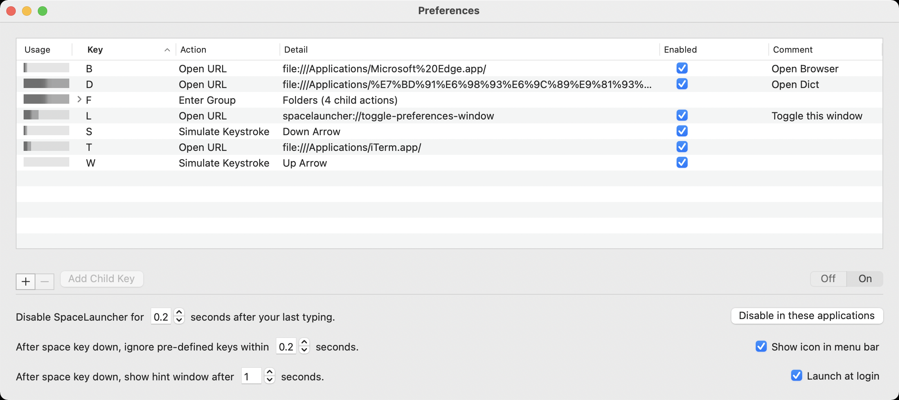
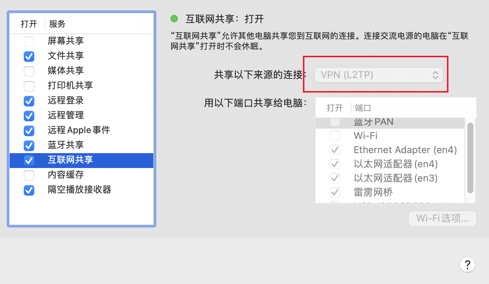
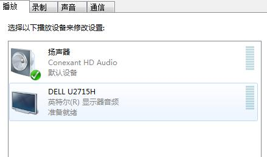

Init My PC
Table of Contents
- InitMyPC
- Cross Platform tools
- Init Mac
- Init Windows
- Init Ubuntu
- Init Android
- Init iOS
init my pc note.
<!– more –>
InitMyPC
目录结构
0 级目录 --0--guodong 1 级目录 --1--.emacs.d --1--.oh-my-zsh (window 系统无该目录) --1--Applications --1--Desktop --1--Documents --1--Downloads --1--Movie --1--Music --1--Pictures 2 级目录 Documents --2--MyCloud --2--MyResource --2--MyProject --2--MyCore --2--MyToolkit (this is a microsoft CodePlex svn project) --2--MyGTD (this is a bitbucket git project) 3 级目录 Documents--MyCloud --3--360Cloud --3--百度云同步盘 --3--快盘 --3--SkyDrive Documents--MyProject --3--Public --3--Private --3--SDK Documents--MyCore --3--Config --3--Resource --3--Document 4 级目录 Documents--MyProject--Public --4--wolfand11 [github-blog] --4--cocos2d (cocos2d-x_develop CocosBuilder_develop) --4--OpenSourceGame Documents--MyCloud--360Cloud --4--MyTestProject --4--MyResource
Cross Platform tools
当前主流的操作系统:windows、linux、osx，对于多平台用户来说在不同的平台使用不同的工具太麻烦了，通常更青睐跨平台的工具。下面是我使用的一些跨平台的工具,有些工具在平常很少用到，作为备份资料也记录下来方便使用的时候查看。
程序开发相关
C++跨平台开发框架
Qt 是我所熟悉的 C++跨平台框架。SDK 使用很方便，文档易懂。
Qt 在 Windows 系统上进行编译，需要在安装 VisualStudio 时选中安装 Visual C++；
Qt 在 Windows 系统上进行调试，需要按照 Debugging Tools for Windows/CDB 插件，该插件需要从 Windows 官网下载。
Lua 编辑器
流程图、UML 图工具
Dia 是一款比较全面的作图工具。
Graphviz 用来做数据结构图，流程图，状态图等比较方便。
思维导图工具
XMind 是用 Java 实现的跨平台思维导图工具，还有一款开源的 freemind 工具也是跨平台的。
源码分析软件
不免费
- Understand https://www.scitools.com/
GUI Git
- fork https://git-fork.com
Web 服务器搭建
xampp 可用来搭建 web 服务器。
测试是否安装成功
启动 XAMPP，启动 Apache 服务，在浏览器中输入 127.0.0.1，看网页是否可以打开
修改默认的 Web 容器路径的方法
打开 xampp\apache\conf\httpd.conf 文件，进行如下修改
#DocumentRoot "C:/xampp/htdocs" #<Directory "C:/xampp/htdocs"> DocumentRoot "D:\Documents\MyWeb" <Directory "D:/Documents/MyWeb">
常用工具
输入法
鼠须管
osx Ctrl+` 切换简体繁体
局域网文件传输
LANDrop
目录管理器
lf
跨平台（windows osx linux）的命令行目录管理器
ranger
跨平台（windows osx linux）的命令行目录管理器
windows 平台需要使用 msys2 来使用
Double Commander
跨平台（windows osx linux）的目录管理器
- doublecmd 官网 https://doublecmd.sourceforge.io/
- doublecmd dark theme 版本 https://doublecmd.sourceforge.io/site/eng/snapshots.php
- doublecmd commondline doc https://doublecmd.github.io/doc/en/commandline.html
mucommander
跨平台（windows osx linux）的目录管理器, 外形比 Double Commander 漂亮一些。还是使用 Double Commander 代替 mucommander
ERROR OSX 无法打开 muCommander, 提示 muCommander.app is damaged
sudo xattr -cr Applications/muCommander.app
音乐播放器
clementine
作为程序员怎么能少 Music 呢?clementine 是使用 Qt 开发的一款跨平台音乐播放器，该软件一直有更新，界面风格越来越漂亮了，对于我来讲很方便了。
xiami
虾米的精选集还是很给力的。
电子书管理软件
calibre
calibre 是一款开源的跨平台电子书管理软件，支持 epud 格式的电子书。该工具支持 epud 转换为 pdf。
Send To Kindle
这款工具的是由亚马逊提供的，发送文档到 kindle。支持文件格式的转换。而且是跨平台的。
Adobe Digital Editions
免费的 epud 格式电子书阅读器，速度很快，不卡顿。
https://www.adobe.com/cn/solutions/ebook/digital-editions/download.html
文档格式转换软件
Pandoc
使用方法
pandoc tmp.org -o tmp.md
pandoc.exe: Cannot decode byte '\xcd': Data.Text.Internal.Encoding.Fusion.streamUtf8: Invalid UTF-8 stream
将文件转化为 utf-8 格式后再进行处理。
pandoc.exe 导出中文 md 为 pdf
- ! Package inputenc Error: Unicode char 目 (U+76EE)
pandoc 拼界面文档.md -o 拼界面文档.pdf --latex-engine=xelatex
- 导出文件中中文不显示
pandoc 拼界面文档.md -o 拼界面文档.pdf --latex-engine=xelatex --variable mainfont="微软雅黑"
- 导出文件中部分中文不显示
pandoc 拼界面文档.md -o 拼界面文档.pdf --latex-engine=xelatex --variable mainfont="微软雅黑" --variable sansfont="微软雅黑" --variable monofont="微软雅黑"
文档下载工具
HTTrack
该工具可以将整个网页抓取下来。下载一些官网的文档非常有用。
Adobe Acrobat DC
该工具可以直接将网页下载下来，并保存为 pdf 文件。使用方法如下图所示：

浏览器
Chrome
浏览器脚本扩展 https://greasyfork.org/zh-CN
集装箱 https://www.crx4chrome.com/extensions/nghhdodcgjgplndmhcfcoppbhjdmemfp/
SimpRead https://github.com/Kenshin/simpread
WebClipper https://github.com/webclipper/web-clipper
FireShot https://getfireshot.com/
Omni https://github.com/alyssaxuu/omni
Vimium https://vimium.github.io/
配置
- 屏蔽 Chrome 上的网站通知功能
浏览器地址栏中输入 chrome://settings/content/notifications 即可配置。
https://baijiahao.baidu.com/s?id=1591800040642614663&wfr=spider&for=pc
Chrome Youtube
切换 Youtube 桌面版和手机版
点击在右上角用户头像，会出现一列菜单，选择 手机版或桌面版 就可以了。
下载工具
- persepolisdm aria2 系 https://persepolisdm.github.io
- Photon aria2 系 https://github.com/alanzhangzm/Photon/
- vuze http://www.vuze.com/
- motrix https://motrix.app/
- FDM https://www.freedownloadmanager.org/
密码管理软件
Keepass 免费开源
安卓：Keepass2Android
iOS：MiniKeePass，iKeePass，Passwordix 等
- keepass https://keepass.info/index.html
QuickAccess
- ueli https://ueli.app/
系统安装
U 盘启动盘制作工具
UNetbootin 是一款跨平台的 U 盘制作工具。这种类型(安装系统)的工具一定要选跨平台啊!
系统工具
鼠标键盘控制
synergy 使用一个鼠标键盘控制多台电脑。
synergy 配置方法

Tips:
Server 端的配置 Client 的 Screen name，要和 Client 显示的 Screen name 一致，否则链接不上。
错误修改
Lock Cursor to Screen:off
因为不小心按了键盘上的 Scroll Lock 按键导致，再按一次就可以了
"happyelementdeMacBook-Pro.local", check server config
[2023-01-30T16:03:24] NOTE: disconnecting client "happyelementdeMacBook-Pro.local"
[2023-01-30T16:03:24] NOTE: client "happyelementdeMacBook-Pro.local" has disconnected
[2023-01-30T16:03:25] NOTE: accepted client connection
护眼软件
cerebro
跨平台的 Spotlight Alfred Library
Platform
安装 osx-system 插件： plugins osx-system
文件搜索
OSX
安装 file-search 插件： plugins file-search
初始化插件使用的工具:
sudo launchctl load -w /System/Library/LaunchDaemons/com.apple.locate.plist sudo /usr/libexec/locate.updatedb # 执行下面命令 查看是否可以成功搜索 locate you-file-name
翻译
安装 youdao 翻译插件: plugins youdao
Init Mac
OSX 系统还是比较傻瓜的，基本上和 windows 差不多，尤其是 appstore 推出以后，基本上不需要
对系统进行什么配置。下面记录下来我所使用的一些软件等等
工具
NTFS 磁盘工具
EverNote
最近一直在使用 EverNote，这是一款多平台(硬件平台、操作系统平台)的笔记软件，所以使用比
较方便。我主要用 EverNote 来做下面这些事情:
- 记录自己偶然想到的问题
- 记录自己最近想思考的问题，随后会在空闲的时间把零碎的思考写下来，为要思考的问题列出
一个提纲来。等自己的思考成熟以后再将该问题写成博客，系统地记录下来。
GitHub
使用 GitHub 来方便的在多台设备上访问自己的文档。我的计划是将自己常用的文档放在 GitHub
上面，比如:工具使用文档，操作系统配置文档。
SourceTree
版本管理的客户端，支持 svn、git、mercurial。
软件包管理
MacPorts (使用 brew 代替)
之前用 ubuntu 一直用 apt-get 觉得很方便，到了 mac 下以后很多软件包的安装、管理很麻烦。MacPorts
就是我要找的 mac 下的 apt-get
注意: 安装完毕以后，如果发现 port 命令不存在，请修改 PATH 环境变量如下: export PATH=$PATH:/opt/local/bin:/opt/local/sbin
brew
brew 和 MacPorts 功能一样。
brew 项目地址：https://github.com/Homebrew/brew/
Mac 下的远程桌面
TeamViewer 可用来远程桌面。
向日葵远程桌面
AnyDesk
键盘改键
Karabiner
https://karabiner-elements.pqrs.org/
Seil: change CapsLock key
https://pqrs.org/osx/karabiner/seil.html
OSX 系统改键
SystemPreferences->Keyboard->ModifyKeys
spacelauncherapp
https://spacelauncherapp.com/
Alfred
和 windows 下的 Listary 功能类似
SpaceLauncher
快速启动 App
快速打开文件夹

OSX FTP 服务使用
# 开启 ftp 服务 sudo -s launchctl load -w /System/Library/LaunchDaemons/ftp.plist # 关闭 ftp 服务 sudo -s launchctl unload -w /System/Library/LaunchDaemons/ftp.plist # ftp 的用户名和密码为 电脑的用户名和密码 # ftp 配置方法 https://stackoverflow.com/questions/31093733/ftp-service-in-os-x-yosemite
固态硬盘机械硬盘融合
gif 工具
- GIPHY CAPTURE https://giphy.com/apps/giphycapture
OSX 配置
开启关闭 ipv6
# 关闭 ipv6 networksetup -setv6off Ethernet && networksetup -setv6off Wi-Fi # 开启 ipv6 networksetup -setv6automatic Wi-Fi && networksetup -setv6automatic Ethernet
通过 host 名称访问 pc 失败
开启后台运行
#方案 1： ##To manually start the daemon: sudo launchctl load /Library/LaunchDaemons/org.jenkins-ci.plist ##To manually stop the daemon: sudo launchctl unload /Library/LaunchDaemons/org.jenkins-ci.plist #方案 2： #Mac 设置 jenkins 自启动： ln -sfv /usr/local/opt/jenkins/*.plist ~/Library/LaunchAgents #说明： LaunchDaemons 为开机時載入 LaunchAgents 在使用者登入時載入 #参考资料： # https://blog.csdn.net/jimmy_lai86/article/details/74202114 #关于 LaunchDaemons 和 LaunchAgents https://blog.csdn.net/left_la/article/details/40393057 #方案 3： #通过 shell 脚本实现后台运行，将 shell 脚本添加到用户的启动列表中 nohup ./my-shell-script.sh & # http://www.cnblogs.com/Javame/p/3582885.html
编写 plist
<?xml version="1.0" encoding="UTF-8"?> <!DOCTYPE plist PUBLIC "-//Apple Computer//DTD PLIST 1.0//EN" "http://www.apple.com/DTDs/PropertyList-1.0.dtd"> <plist version="1.0"> <dict> <key>Label</key> <string>org.sohu.MyScript</string> <key>ProgramArguments</key> <array> <string>/sbin/MyScripts/MyScript</string> </array> <key>RunAtLoad</key> <true/> <key>StartInterval</key> <integer>900</integer> </dict> </plist> ***************************************** This plist file could be saved in /Library/LaunchDaemons/com.acme.disablespotlightonbackup.plist and do: chmod 644; chown root:admin and sudo launchctl load /Library....backup.plist. <?xml version="1.0" encoding="UTF-8"?> <!DOCTYPE plist PUBLIC "-//Apple//DTD PLIST 1.0//EN" "http://www.apple.com/DTDs/ PropertyList-1.0.dtd"> <plist version="1.0"> <dict> <key>Label</key> <string>com.acme.disablespotlightonbackup</string> <key>OnDemand</key> <true/> <key>ProgramArguments</key> <array> <string>/full/path/to/shell/script/created/above</string> </array> <key>StartCalendarInterval</key> <dict> <key>Munute</key> <integer>1</integer> </dict> </dict> </plist>
显示隐藏文件
在 Mac 文件的文件名前添加 . 即可使文件隐藏
也可以在终端里面能用命令来控制
显示 Mac 隐藏文件的命令：
defaults write com.apple.finder AppleShowAllFiles YES
隐藏 Mac 隐藏文件的命令：
defaults write com.apple.finder AppleShowAllFiles NO
命令运行后需要按 Command Option Esc 选中 Finder 然后点一下 重新开启
共享 VPN 给其他机器
vpn 需要使用 L2TP 协议, 然后在共享网络时选择 VPN(L2TP)

快速锁屏
在 System Preferences 中启用 Users&Groups > Login Options > Show fast user switching menu as icon，顶部工具条右侧会有一个人形图标，以后每次点击图标在下拉菜单中选择 Login Window 即可锁屏
Init Windows
Window 内置功能
多桌面
Win+Tab : 预览所有桌面
Win+Ctrl+←/→ : 快速切换到相邻的左右桌面
工具
键盘改键
Tips: 使用 MapKeyboard.exe 代替 AutoHotkey, AutoHotKey 对某些软件支持不足。
AutoHotkey http://www.autohotkey.com/
截屏工具
SETUNA
Snipaste
| 快捷键 | 说明 |
|---|---|
| F1 | 截图 |
| Shift+双击截图 | 截图收缩为方块或展开 |
| F3 | 唤出前一个截图 |
录屏软件
- ScreenToGif https://github.com/NickeManarin/ScreenToGif 开源免费
- bandicam https://www.bandicam.cn/ 免费录制 10 分钟
多窗口资源管理器
TotalCommander + VimDesktop
Total Commander 需要付费才能使用
- TotalCommander https://www.ghisler.com/
- VimDesktop https://github.com/goreliu/vimdesktop
XYPlorer
XYPlorer 有 Free 版本
QTTabBar
Explorer 插件
QuickAccess
flowlauncher
flowlauncher 还是没有 Listary 好用啊
- flowlauncher https://www.flowlauncher.com/
Listary
设置自动运行
使用说明：
和 osx 下的 Alfred 功能类似
- Ctrl-Ctrl invoke Lisary
- Ctrl-o 打开目录
Listary 在当前目录下搜索
方案 1
- 安装 everything
配置自定义命令 option/Keywords/Custom
Keyword: everything DisplayTitle: In Current Path Serach "{query}" Path: D:\Applications\Everything-1.4.1.1005.x64\Everything.exe Parameter: -s " """%path%""" {query} "- https://blog.csdn.net/kyle1314608/article/details/110141194
方案 2
直接在当前目录输入要搜索的文件名称。
Tips: 不需要使用 Ctrl+Ctrl 唤出 Listary 搜索框
windows shell
babun
该工具集成了 cygwin，oh-my-shell
http://babun.github.io/
安装方法：
下载安装包解压，执行下面命令，/t 表示安装路径。
install.bat /t "D:\target_folder"
Conemu
使用
| 快捷键 | 说明 |
|---|---|
| Win+w | 打开新的 tab |
ConEmu 鼠标右键菜单
Settings/Integration
Menu item: CoEmu Here (FishShell)
Command: {Fish::Msys2-64} -cur_console:n
Icon file: D:\Applications\ConEmu\ConEmu64.exe,0
msys2
视频播放器
PotPlayer http://potplayer.daum.net/?lang=zh_CN
KMPlayer http://www.kmplayer.com
SPlayer https://www.splayer.org 射手播放器 可以自动载入字幕
多屏增强工具
DisplayFusion
- 设置自动启动
- 任务栏设置 鼠标中间功能为移动窗口到下一桌面
- 任务栏设置 显示所有程序
- 窗口管理设置 打开程序显示在当前桌面
包管理器
chocolatey
# 安装https://chocolatey.org/install Set-ExecutionPolicy Bypass -Scope Process -Force; [System.Net.ServicePointManager]::SecurityProtocol = [System.Net.ServicePointManager]::SecurityProtocol -bor 3072; iex ((New-Object System.Net.WebClient).DownloadString('https://chocolatey.org/install.ps1')) # help choco -h # 安装软件到指定目录 # Tips: choco 指定软件安装目录需要 pro版本
磁盘分区工具
应用程序卸载
- Geekuninstaller https://geekuninstaller.com/
Process Explorer
进程管理工具。
PowerToys
目前没啥有用的工具
Windows 配置
环境变量设置
## 添加 HOME 环境变量 设置 HOME 环境变量为 D:\ ## 将 babun 路径添加到 PATH 环境变量中 D:\Applications\babun\.babun\cygwin\usr\local\bin; D:\Applications\babun\.babun\cygwin\bin;
更改用户账户控制设置
打开设置界面， 搜索“更改用户账户控制设置”，滑动 slider 到从不通知。
加速 windows
关闭不必要的服务
计算机->管理->服务和应用程序->服务
禁用下面的服务：
Superfetch
Routing and Remote Access
Windows Update
查看进程使用的服务
任务管理器中，选中进程右键点击"转到服务"
通过 host 名称访问 pc 失败
ping host
# ping host 返回 ipv4 ping my-pc -4 # ping host 返回 ipv6 ping my-pc -6
Windows7 双显示器设置
- 单击鼠标右键 选择 “屏幕分辨率”
- 在多显示器选项中 选择 “扩展这些显示”
Windows 没有声音
设置默认的播放设备为扬声器就可以了。

修改 Window7 User 目录到 D 盘
https://zhidao.baidu.com/question/1638812272802273660.html
- 按一下“Windows”键，输入“计算机管理”之后按“Enter”，呼出“计算机管理器”；
- 鼠标点击“Administrator”，选择属性，而后在随后的对话框中去掉“帐户已禁用”之前的勾，而后关闭“计算机管理器”；
- 注销当前用户（注意，不是“切换用户”），而后以“Administrator”登录；
- 打开命令行窗口，输入以下命令：robocopy "C:\Users" "D:\Users" /E /COPYALL /XJ /XD "C:\Users\Administrator"；
- 注销 Administrator，重新用用户名登录 Windows7，而后到“计算机管理器”里禁用 Administrator；
以管理员身份打开一个 DOS 窗口，输入以下命令即可：
rmdir "C:\Users" /S /Q mklink /J "C:\Users" "D:\Users"
@echo off
robocopy "C:\\Users" "D:\\Users" /E /COPYALL /XJ /XD WindowsApps
rmdir "C:\\Users" /S /Q
mklink /J "C:\\Users" "D:\\Users"
上面的内容保存为 mv.bat 保存到 D 盘。
开始运行或徽标+R
shutdown -O -r -t 0
重启到恢复界面
进入疑难问题菜单-命令提示符
CD D:
执行 MV.bat 即可.
修改启动项
任务管理器中有一个启动页签，其中可以控制启动项。
Window10 自带输入法设置
- 繁体/简体切换 默认切换快捷键为 Ctrl+Shift+F, 建议直接关闭该快捷键
- 中英文模式切换 默认快捷键为 Shift，建议不要关闭
- 中英文标点切换 建议关闭
- 表情面板 建议关闭
- 候选词翻页 可以保留
重启进入安全模式
Win+R 调出运行框
输入 msconfig, 在 引导 中选中 安全引导
关闭自动锁屏
Step1: secpol.msc 命令
Step2: 在本地安全策略窗口中，点击：本地策略 - 安全选项，在右侧找到并左键双击：交互式登录：计算机不活动限制
Step3: 设置时间为最大 2160000
及时刷新 hosts 配置
ipconfig /flushdns #清除 DNS 缓存内容。 ipconfig /displaydns #显示 DNS 缓存内容
Init Ubuntu
重新安装 Ubuntu 以后 该做的 事情。(这个文档是大学那会儿[2006-2010]写的，估计现在有很多都变了吧)
最重要的事情
首先：
自动挂载 Resourse 分区(就是你存储资源的那个分区)。挂载方法参看下面文中所介绍的方法：
《ununtu 自动挂载分区》 http://hi.baidu.com/wolfand11/blog/item/a2629eee6e9ff5f1b3fb9597.html
一般，我会在自己的用户目录下创建一个 Resourse 目录，然后将分区挂载在该目录下。
（ /dev/sda6 /home/smile/Resource ext4 defaults 0 0）
其次：
设置桌面等的路径，设置方法看下面文中所介绍的方法：
《转》改变 Ubuntu 桌面所在文件夹 http://hi.baidu.com/wolfand11/blog/item/b4bbe21f7a6659c4a68669cb.html
一般，我自己的资源分区中都会创建 Desktop、Documents、Downloads、Music、Pictures、Public、Templates、Videos
等目录，我会将系统默认的路径改为 Resourse 下面的对应的路径。（我为什么要这么做呢？:-) 有一次忘记备份桌面的资料，就
重新装系统了，后果可想而知。如果修改这些默认路径，就会将资料都保存在我的 Resourse 分区中了）。下面是我的设置代码：
XDG_DESKTOP_DIR="$HOME/Resource/Desktop/"
XDG_DOCUMENTS_DIR="$HOME/Resource/Documents"
XDG_DOWNLOAD_DIR="$HOME/Resource/Downloads/"
XDG_MUSIC_DIR="$HOME/Resource/Music"
XDG_PICTURES_DIR="$HOME/Resource/Pictures"
XDG_PUBLICSHARE_DIR="$HOME/Resource/Public"
XDG_TEMPLATES_DIR="$HOME/Resource/Templates"
XDG_VIDEOS_DIR="$HOME/Resource/Videos"
环境配置软件安装
安装、配置编译环境
刚装好的系统中已经有 GCC 了，但是这个 GCC 什么文件都不能编译，因为没有一些必须的头文件，所以要安装 build-essential 这个软件 包，安装了这个包会自动安装上 g++,libc6-dev,l inux -libc-dev,libstdc++6-4.1-dev 等一些必须的软件和头文件的库。可以在新立得里面搜索 build-essential
配置 Terminal
使其符合自己使用习惯
参考左边链接配置方法：http://hi.baidu.com/wolfand11/blog/item/bde7741b85ff6c158718bfd5.html
安装配置 QtCreator
直接在 Ubuntu Software Center 中搜索安装
（1）、设置代码自动补全快捷键为 Shift+f；
在 QtCreator 进入 Tool 菜单中 Option，选择 Environment/Keyboard,在右边对话框中找到
TextEditor.CompleteThis 选项进行设置。
（2）、设置字体大小（对眼睛有好处）；
（3）、修改 Qt 中 example 文件夹的访问权限，sudo chmod -R 777 examples
安装配置 BoUML（UML 工具）
直接在 Ubuntu Software Center 中搜索安装
安装 Amaya
http://www.w3.org/Amaya/Overview.html%EF%BC%88Amaya 官网）
Amaya 是 一个具有浏览功能的 WEB 开发工具，是由万维网协会（W3C）成员开发的一个网络浏览器，同时也可以作为对 W3C 成果的测试工具。Amaya 包括了一个 HTML 编辑器和浏览器，用户可以免费到 W3C 的网站下载它，在 linux 和 windows 下都有对应的版本。Amaya 起初只支持 HTML 和 CSS 的编 缉，现在已经添加了对 XML、XHTML、MathML、SVG 等的支持。
安装 VirtualBox（虚拟机）
直接在 Ubuntu Software Center 中搜索安装
安装 StarDict（Linux 下的金山词霸）
直接在 Ubuntu Software Center 中搜索安装
安装 iptux（linux 下的飞鸽）
直接在 Ubuntu Software Center 中搜索安装
安装 libfetion
（Linux 下的飞信）http://www.libfetion.org/
安装 Kchmiewer
这个是 kde 下出色一个 chm 阅读器，相比较于 chmsee 出现中文乱马的情况而言，这个可以说是完美了。
安装：sudo apt-get install kchmviewer
安装 XMind
XMIND 是一款非常实用的商业思维导图（Mindmap）软件，应用全球最先进 的 Eclipse RCP 软件架构，全力打造易用、高效的可视化思维软件，强调软件的可扩展、跨平台、稳定性和性能，致力于使用先进的软件技术帮助用户真正意义上提高生产率。
修改最大化、最小化、关闭按钮的位置。
请参考<转>如何将 Ubuntu 10.04 LTS 的窗口控制按钮从左上角调整到右上角
http://hi.baidu.com/wolfand11/blog/item/1adac00879b1983ce82488e8.html
设置 Ibus
如果你是 KUbuntu 那么你要安装 ibus-gtk,这样才能在 Gnome 的软件中输入中文。
如果你是 Ubuntu 那么你要安装 ibus-qt4，这样你才能在 KDE 的软件中输入中文。
设置 ibus 启动项，System –> Perference –> Startup Applications –> add —> Name: ibus-daemon Command : /usr/bin/ibus-daemon -d –> Save
设置桌面图标
ubuntu 如何让桌面显示“我的电脑”及去掉桌面上的“磁盘图标”
http://hi.baidu.com/wolfand11/blog/item/4f1ab1097a86afbe2fddd4d3.html?timeStamp=1290957426596
rar 软件
ubuntu 压缩文件为 rar 格式与解压 rar 格式文件
- 安装 rar 与 unrar 方法：
sudo apt-get install rar
sudo apt-get install unrar - 简单的使用方法：
压缩文件为 rar 格式
例:rar a test.rar file1.txt 若 test.rar 文件不存在，则打包 file1.txt 文件成 test.rar 例:rar a test.rar file2.txt 若 test.rar 文件已经存在，则添加 file2.txt 文件到 test.rar 中解压 rar 文件
例：unrar x -o- -y test.rar /home/test/ 将 test.rar 解压到/home/test/ 目录下。 例：unrar e-o- -y test.rar 将 test.rar 解压到当前目录下。
跨平台的音乐播放器
Init Android
Init iOS
Documents
文件 视频 图片 和 PC 互传.